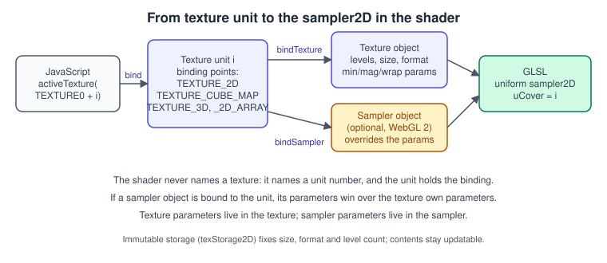
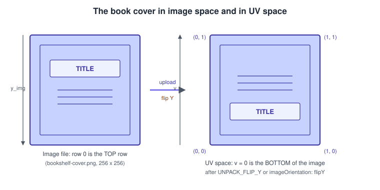
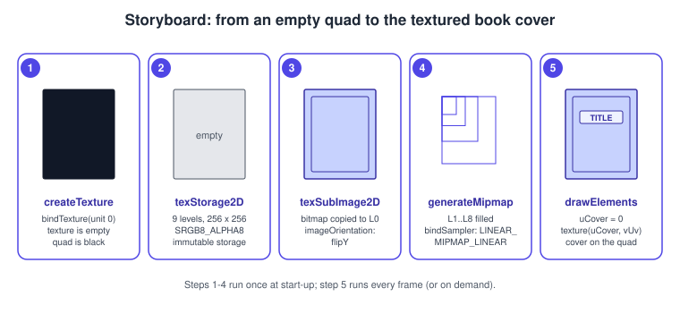
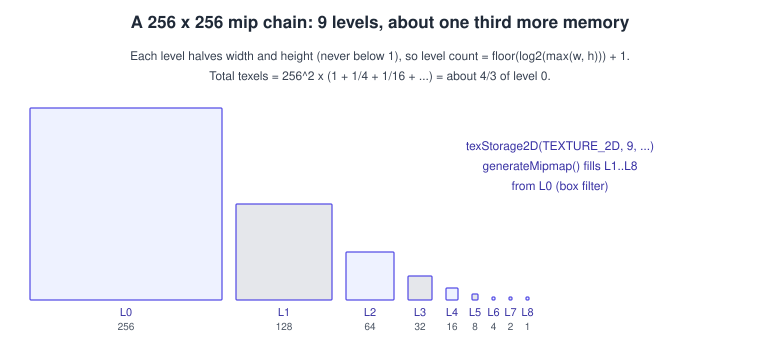
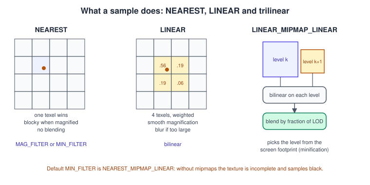
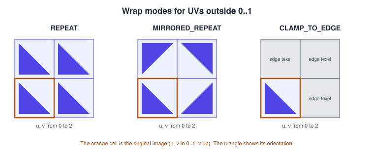

Textures and Samplers in WebGL
|
This content was generated with the assistance of AI and should be verified against the official documentation before being relied on in production. |
A texture is an image the GPU can read inside a shader, and almost everything you see in a 3D scene depends on one: colour
maps, normal maps, lookup tables, shadow maps, the render target of the previous pass. WebGL inherits the OpenGL ES texture
model, so the ideas are those of desktop OpenGL (see Textures and Samplers in OpenGL and the
API-neutral Textures, Sampling and Mipmaps), but the browser adds its own way
of getting pixels in: images, canvases, video frames and ImageBitmap objects, with cross-origin rules and a few WebGL-only
pixel-store flags. This page covers all of it.
The facts were checked in November 2026 against the Khronos WebGL 1.0 and 2.0 specifications (editor’s drafts dated 2026-06-30)
and MDN. The code targets WebGL 2 (OpenGL ES 3.0, GLSL ES 3.00), which every evergreen browser has shipped for years (Chrome 56,
Firefox 51, Edge 79, Safari and iOS 15), and a dedicated section lists what is different in WebGL 1. The examples are ES modules
served from a local web server; they load the shared original textures from the
book cover of the Bookshelf running example, so copy
bookshelf-cover.png next to your HTML file.

This page is the second step of the raw WebGL track: the triangle of The First Triangle in WebGL 2 becomes a textured book-cover quad here, and a lit, rotating book in Lighting in Shaders. The vertex attribute side of the quad is covered in Buffers, Attributes, Uniforms and VAOs and the matrices in Transforms and Cameras.
Texture objects, units and samplers

Three kinds of object are involved, and the confusion between them causes most beginner bugs.
-
A texture object (
WebGLTexture) owns the pixel data (every mip level) and, unless a sampler overrides them, the sampling parameters: filters and wrap modes. -
A texture unit is a numbered slot,
gl.TEXTURE0and upwards. Each unit has one binding point per target (2D, cube map, 3D, 2D array).gl.activeTexture(unit)selects the unit that the followingbindTextureandtexParametercalls act on. -
A sampler object (
WebGLSampler, WebGL 2 only) holds only sampling parameters. Bound to a unit withbindSampler, it replaces the parameters stored in the texture, which lets one image be sampled in several ways without copies.
In GLSL a sampler2D uniform contains the unit number, set with gl.uniform1i(location, unit). The shader never refers to a
texture object directly.
// Typical per-draw binding of one texture (WebGL 2).
gl.activeTexture(gl.TEXTURE0); // select unit 0
gl.bindTexture(gl.TEXTURE_2D, coverTex); // bind the texture to unit 0's 2D target
gl.bindSampler(0, trilinearSampler); // optional: sampling parameters for unit 0
gl.uniform1i(uCoverLocation, 0); // sampler2D uCover reads unit 0The number of units is implementation dependent. Query gl.getParameter(gl.MAX_TEXTURE_IMAGE_UNITS) (fragment shader) and
gl.MAX_COMBINED_TEXTURE_IMAGE_UNITS (all stages) instead of assuming a number; the guaranteed minimums are listed in the
MDN WebGL best practices.
Texture targets
| Target | WebGL | Use |
|---|---|---|
|
1 and 2 |
Ordinary images: colour, normal, mask and lookup maps, render targets. |
|
1 and 2 |
Six square faces addressed by a direction: skyboxes, environment reflections, point-light shadows. Faces are
|
|
2 only |
Volume data, colour-grading lookup tables, noise. |
|
2 only |
Many same-size 2D layers selected by an index: sprite sheets, texture atlases without bleeding, cascaded shadow maps. |
3D and array textures are used in WebGL 2 Advanced Features; the rest of this
page concentrates on TEXTURE_2D, and everything about parameters applies to the other targets as well.
Orientation: image space, UV space and flipping

Two conventions collide. Image files, canvases and videos store row 0 at the top. OpenGL texture coordinates start at the bottom-left: texture coordinate \( (0, 0) \) is the first texel of the data you uploaded, which, for an image, is the top-left pixel unless you flip it. Left alone, a texture appears upside down on a quad whose \( v \) coordinate grows upward. Choose one of two remedies and use it everywhere:
-
Flip while uploading, so that UV space has \( v = 0 \) at the bottom of the picture, as above.
-
Flip the \( v \) coordinate in the mesh data or the shader (
vUv = vec2(aUv.x, 1.0 - aUv.y)) and upload unflipped. glTF models do this: their UVs have the origin at the top-left, which is why three.js loads glTF textures withflipY = false.
WebGL offers pixel-store flags that apply to the next upload from DOM sources, set with gl.pixelStorei:
| Parameter | Default | Effect |
|---|---|---|
|
|
Flips the source vertically. Applies to images, canvases, video elements and pixel arrays. |
|
|
Multiplies RGB by alpha during the upload. Needed if your blending expects premultiplied colour. |
|
|
The only other value is |
|
|
Row alignment in bytes for typed-array uploads: 1, 2, 4 or 8. Set it to 1 for tightly packed data whose rows are not a multiple of 4 bytes. |
|
|
WebGL 2 only. Read a sub-rectangle or a layer of a larger typed array. |
A pitfall for the modern loading path: when the source is an ImageBitmap, decide orientation and alpha handling when you
create the bitmap (createImageBitmap(blob, { imageOrientation: "flipY", premultiplyAlpha: "none" })) rather than relying on the
pixel-store flags. That is what the examples below do. The flags are state of the context, not of the texture: set them before
every upload that needs them and reset them afterwards, or a later upload of a different kind (for example a typed array that must not be
flipped) is affected.
Creating a texture: texImage2D or texStorage2D
WebGL 2 has two ways to allocate and fill the levels of a texture.
| Call | What it does | When to use it |
|---|---|---|
|
Specifies one level and may be called again with a different size or format. The texture is mutable: it is only complete when all the levels the filter needs exist and agree in size and format. |
WebGL 1 (the only choice), quick experiments, and cases that really change size. |
|
Allocates all levels at once with a fixed size and format: the texture is immutable. Content is then written with
|
WebGL 2 default. Complete by construction, no per-level mismatches, drivers can allocate the right amount of memory once. |
texStorage2D is WebGL 2 only (Baseline Widely available since September 2021 on MDN). After it, you cannot change the size,
format or level count of the texture, but you can still update every texel and regenerate mipmaps. To resize, create a new
texture object.
The number of levels of a full chain is \( \lfloor \log_2( \max(w, h) ) \rfloor + 1 \): 9 for a \( 256 \times 256 \) image.
// How many mip levels does a full chain have?
const levelCount = (w, h) => Math.floor(Math.log2(Math.max(w, h))) + 1;
// Immutable storage plus a content upload (WebGL 2).
const levels = levelCount(bitmap.width, bitmap.height);
gl.bindTexture(gl.TEXTURE_2D, tex);
gl.texStorage2D(gl.TEXTURE_2D, levels, gl.SRGB8_ALPHA8, bitmap.width, bitmap.height);
gl.texSubImage2D(gl.TEXTURE_2D, 0, 0, 0, gl.RGBA, gl.UNSIGNED_BYTE, bitmap);
gl.generateMipmap(gl.TEXTURE_2D);texStorage2D takes only an internal (sized) format; there are no format and type arguments because there is no data. Those
come with the later texSubImage2D(target, level, xoffset, yoffset, format, type, source) call. The texImage2D overloads of WebGL 2
are:
| Form | Source of the pixels |
|---|---|
|
A typed array (or |
|
A |
|
WebGL 2: reads from the buffer bound to |
Internal formats
The internal format says how the GPU stores and interprets the texels. The ones used in the Bookshelf scene:
| Internal format | Upload format / type |
Use |
|---|---|---|
|
|
Four 8-bit channels read as linear numbers. Normal maps, masks, roughness, data of every kind. |
|
|
Colour images authored in sRGB (photographs, painted covers). The GPU converts to linear on every read, before filtering, which is the physically right order. Alpha is stored linearly. |
|
|
Single-channel masks and height maps at a quarter of the memory. |
|
|
HDR and numeric data. Linear filtering of 32-bit floats needs the |
|
|
Depth textures, for example a shadow map in Framebuffers and Render to Texture. |
Because SRGB8_ALPHA8 textures yield linear values, whatever you draw to the default canvas must be encoded back to sRGB in the shader (or the canvas given a linear-aware path). The lit shader on the next page does that; the quad example below ends with the same helper. Colour theory and tone mapping are in Color Spaces, HDR and Tone Mapping.
WebGL 1 has only unsized formats (gl.RGBA, gl.RGB, gl.LUMINANCE, and so on) and treats the data as linear unless the EXT_sRGB
extension is available; WebGL 2’s required sized formats and exact capabilities follow the OpenGL ES 3.0 tables.
Loading images the modern way

An image must be decoded before it can be uploaded. Three ways, from best to worst for responsiveness:
-
fetch plus createImageBitmap (recommended). The browser decodes off the main thread, you set flip and premultiplication as options, and the same code works in a worker (see OffscreenCanvas and Workers).
-
HTMLImageElementplusimg.decode(). Works everywhere, needscrossOriginfor other origins (next paragraph). -
Canvas
getImageData: forces a copy, loses colour management; avoid for plain image loading.
createImageBitmap(source, options) takes these options that matter for textures:
| Option | Values | Meaning |
|---|---|---|
|
|
|
|
|
Choose |
|
|
Use |
|
numbers, |
Resample while decoding, handy to downscale a huge source before it ever reaches the GPU. |
Source: MDN: createImageBitmap()
A reusable loader
// texture-utils.js: load an image into an immutable, mip-mapped WebGL 2 texture.
export const levelCount = (w, h) => Math.floor(Math.log2(Math.max(w, h))) + 1;
/**
* @param {WebGL2RenderingContext} gl
* @param {string} url same-origin, or CORS-enabled for cross-origin images
* @param {{ srgb?: boolean }} options srgb: true for colour images, false for data images
*/
export async function loadTexture2D(gl, url, { srgb = true } = {}) {
const response = await fetch(url, { mode: "cors" });
if (!response.ok) throw new Error(`Texture ${url}: HTTP ${response.status}`);
const bitmap = await createImageBitmap(await response.blob(), {
imageOrientation: "flipY", // UV origin at the bottom-left of the picture
premultiplyAlpha: "none",
colorSpaceConversion: srgb ? "default" : "none",
});
const tex = gl.createTexture();
gl.bindTexture(gl.TEXTURE_2D, tex);
gl.texStorage2D(
gl.TEXTURE_2D,
levelCount(bitmap.width, bitmap.height),
srgb ? gl.SRGB8_ALPHA8 : gl.RGBA8,
bitmap.width,
bitmap.height,
);
gl.texSubImage2D(gl.TEXTURE_2D, 0, 0, 0, gl.RGBA, gl.UNSIGNED_BYTE, bitmap);
gl.generateMipmap(gl.TEXTURE_2D);
bitmap.close(); // release the decoded pixels in main memory
return tex;
}Source: MDN: createImageBitmap()
generateMipmap on an SRGB8_ALPHA8 texture is allowed in WebGL 2 because the format is both texture-filterable and
colour-renderable. It must be called after the level 0 upload.
Cross-origin images
A texture made from a cross-origin image without permission would let a page read pixels it should not see (through timing or
readPixels), so WebGL refuses it: the upload throws a SecurityError, or in older engines raises INVALID_OPERATION. To use
an image from another origin the server must send Access-Control-Allow-Origin, and you must request it in CORS mode:
fetch(url, { mode: "cors" }), or img.crossOrigin = "anonymous" set before img.src. The full story, including tainted
canvases, is in Security, CORS and Privacy. A file:// page counts as
cross-origin for every file: always develop on a local dev server.
Mipmaps

A mipmap chain is a pyramid of pre-filtered copies, each half the size of the previous (never below 1). When a textured surface is small on screen, the shader would otherwise skip over most of the texels, which makes distant detail shimmer and alias. With mipmaps the GPU picks the level whose texels are about one pixel big. The chain costs about one third more memory in total (\( 1 + \tfrac{ 1 }{ 4 } + \tfrac{ 1 }{ 16 } + \dots = \tfrac{ 4 }{ 3 } \)) and usually speeds up rendering, because smaller levels are cache friendly.
-
gl.generateMipmap(target)fills levels 1 to N from level 0. Call it once after the upload. It fails withINVALID_OPERATIONon formats that cannot be both filtered and rendered (for example 32-bit float without extensions) and, in WebGL 1, on non-power-of-two textures. -
You can instead upload each level yourself (
texSubImage2Dwithlevel> 0) to supply hand-made or pre-compressed levels; KTX2 files carry them. -
The sampler picks the level from the screen-space derivatives of the texture coordinates. In a vertex shader there are no derivatives: use
textureLod. In a fragment shader,textureLodandtextureGradoverride the automatic choice. -
Averaging normal-map levels shortens the normals; renormalise after sampling (done in the lit shader of the next page).
-
Texture atlases and array textures need padding or array layers to avoid colour bleeding between neighbours at lower levels.
-
gl.TEXTURE_BASE_LEVELandgl.TEXTURE_MAX_LEVEL(WebGL 2) restrict which levels are used; useful to stream a texture in from the smallest level.
Filtering

Two filters matter: the magnification filter (the texel is bigger than a pixel) and the minification filter (the texel is smaller than a pixel; mipmaps live here).
| Value | Meaning |
|---|---|
|
The single closest texel. Blocky when magnified, and the right choice for pixel art or lookup data that must not be blended (ids, masks). |
|
Weighted average of the 2 x 2 closest texels (bilinear). The default choice for magnification. |
|
Closest level, nearest texel. Fast, with visible level jumps. |
|
Closest level, bilinear inside it. |
|
Blend two levels, nearest texel in each. This is the default |
|
Blend two levels, bilinear in each: trilinear. The best quality without anisotropy; the usual choice for colour maps. |
TEXTURE_MAG_FILTER accepts only NEAREST and LINEAR. The default TEXTURE_MIN_FILTER is NEAREST_MIPMAP_LINEAR, so a
texture without a full mip chain is incomplete with default parameters: sampling it returns the opaque black (0, 0, 0, 1),
and Chrome logs a warning such as "texture bound to texture unit 0 is not renderable". The fix is to build the chain or to
change the min filter to NEAREST or LINEAR. Float textures also need NEAREST-only filtering unless the extension for linear
filtering is present.
Anisotropic filtering
Trilinear filtering assumes a square footprint; a floor seen at a grazing angle has a long thin one, and the result blurs. The
EXT_texture_filter_anisotropic extension (baseline since 2016) takes several samples along the long axis.
// Enable the best anisotropy the device offers on the bound texture.
const ext = gl.getExtension("EXT_texture_filter_anisotropic");
if (ext) {
const max = gl.getParameter(ext.MAX_TEXTURE_MAX_ANISOTROPY_EXT);
gl.texParameterf(gl.TEXTURE_2D, ext.TEXTURE_MAX_ANISOTROPY_EXT, Math.min(8, max));
}A value of 4 to 8 is a good compromise; the cost grows with the value but only on surfaces that are really oblique.
Wrap modes

When a texture coordinate leaves \( [0, 1] \) the wrap mode decides what is read. It is set per axis: TEXTURE_WRAP_S (u),
TEXTURE_WRAP_T (v) and, for 3D, TEXTURE_WRAP_R.
-
gl.REPEAT(default) tiles the image: wood boards, floors. Only seamless images look right. -
gl.MIRRORED_REPEATflips every second tile, hiding seams of non-tileable images. -
gl.CLAMP_TO_EDGErepeats the edge texel: the right choice for atlases, UI, lookup tables and anything with borders. The cover quad of the Bookshelf uses it so linear filtering at the border does not blend with the opposite edge.
WebGL has no CLAMP_TO_BORDER; if you need a constant outside colour, write it in the shader.
Sampler objects (WebGL 2)
A sampler uses the same enums as texture parameters (gl.TEXTURE_MIN_FILTER and the others), set with samplerParameteri and
samplerParameterf.
const trilinear = gl.createSampler();
gl.samplerParameteri(trilinear, gl.TEXTURE_MIN_FILTER, gl.LINEAR_MIPMAP_LINEAR);
gl.samplerParameteri(trilinear, gl.TEXTURE_MAG_FILTER, gl.LINEAR);
gl.samplerParameteri(trilinear, gl.TEXTURE_WRAP_S, gl.CLAMP_TO_EDGE);
gl.samplerParameteri(trilinear, gl.TEXTURE_WRAP_T, gl.CLAMP_TO_EDGE);
const pixelArt = gl.createSampler();
gl.samplerParameteri(pixelArt, gl.TEXTURE_MIN_FILTER, gl.NEAREST);
gl.samplerParameteri(pixelArt, gl.TEXTURE_MAG_FILTER, gl.NEAREST);
gl.bindSampler(0, trilinear); // unit 0 now ignores the texture's own parameters
gl.bindSampler(1, pixelArt); // unit 1 too
// gl.bindSampler(0, null) restores the texture's own parametersSamplers are WebGL 2 only, and a sampler also accepts the compare parameters (TEXTURE_COMPARE_MODE, TEXTURE_COMPARE_FUNC) used for
hardware shadow lookups with sampler2DShadow. Two practical rules:
-
Create a handful of samplers at start-up (trilinear clamp, trilinear repeat, nearest clamp, shadow compare) and bind them per draw; do not create one per texture.
-
With a sampler bound,
texParameterion the texture is ignored for that unit, which surprises people who debug by changing the texture parameters. Unbind withbindSampler(unit, null)to test.
Texture units and GLSL
The shader side, written for GLSL ES 3.00 (#version 300 es):
#version 300 es
precision mediump float; // a default float precision is mandatory in fragment shaders
precision mediump sampler2D; // sampler types have their own default (lowp) in ES: raise it
uniform sampler2D uCover; // value = texture unit number
in vec2 vUv;
out vec4 outColor;
void main() {
outColor = texture(uCover, vUv); // ES 1.00 spelled it texture2D
// vec4 c = texelFetch(uCover, ivec2(10, 20), 0); // exact texel, no filtering (ES 3.00)
// vec4 d = textureLod(uCover, vUv, 2.0); // explicit mip level
// ivec2 size = textureSize(uCover, 0); // size of level 0
}Source: GLSL ES 3.00 specification
Sampler uniforms are set once with uniform1i. If two samplers of different types (sampler2D and samplerCube) point at the
same unit, the draw fails with INVALID_OPERATION. Never leave an unused sampler pointing at unit 0 while another sampler
type also uses unit 0. Setting the uniform again every frame is unnecessary: it is program state.
A complete example: the textured book cover
The program below draws the cover of the Bookshelf book on a quad, with trilinear filtering, an aspect-correct view and encoding
of the linear sampled colour back to sRGB. Save it as index.html next to bookshelf-cover.png and open it through a local server
(for example npx vite or python3 -m http.server).
<!doctype html>
<html lang="en">
<head>
<meta charset="utf-8">
<title>Bookshelf: textured cover</title>
<style>
html, body { margin: 0; height: 100%; background: #111827; }
canvas { width: 100%; height: 100%; display: block; }
</style>
</head>
<body>
<canvas id="gl"></canvas>
<script type="module">
const canvas = document.getElementById("gl");
const gl = canvas.getContext("webgl2");
if (!gl) throw new Error("WebGL 2 is not available in this browser");
const vertexSource = `#version 300 es
layout(location = 0) in vec2 aPosition;
layout(location = 1) in vec2 aUv;
uniform float uAspect; // canvas width / height
out vec2 vUv;
void main() {
vUv = aUv;
gl_Position = vec4(aPosition.x / uAspect, aPosition.y, 0.0, 1.0);
}`;
const fragmentSource = `#version 300 es
precision mediump float;
uniform sampler2D uCover;
in vec2 vUv;
out vec4 outColor;
// The texture is SRGB8_ALPHA8, so texture() returns LINEAR values.
// The default canvas expects sRGB, so encode before writing.
vec3 linearToSrgb(vec3 c) {
return mix(c * 12.92, 1.055 * pow(c, vec3(1.0 / 2.4)) - 0.055, step(0.0031308, c));
}
void main() {
vec4 texel = texture(uCover, vUv);
outColor = vec4(linearToSrgb(texel.rgb), texel.a);
}`;
function compile(type, source) {
const shader = gl.createShader(type);
gl.shaderSource(shader, source);
gl.compileShader(shader);
if (!gl.getShaderParameter(shader, gl.COMPILE_STATUS)) {
throw new Error(gl.getShaderInfoLog(shader));
}
return shader;
}
function link(vs, fs) {
const program = gl.createProgram();
gl.attachShader(program, vs);
gl.attachShader(program, fs);
gl.linkProgram(program);
if (!gl.getProgramParameter(program, gl.LINK_STATUS)) {
throw new Error(gl.getProgramInfoLog(program));
}
return program;
}
const program = link(compile(gl.VERTEX_SHADER, vertexSource), compile(gl.FRAGMENT_SHADER, fragmentSource));
const uAspect = gl.getUniformLocation(program, "uAspect");
const uCover = gl.getUniformLocation(program, "uCover");
// A 0.6 x 0.9 book cover: x, y, u, v per vertex (interleaved, 16-byte stride).
const vertices = new Float32Array([
-0.6, -0.9, 0, 0,
0.6, -0.9, 1, 0,
0.6, 0.9, 1, 1,
-0.6, 0.9, 0, 1,
]);
const indices = new Uint16Array([0, 1, 2, 0, 2, 3]);
const vao = gl.createVertexArray();
gl.bindVertexArray(vao);
const vbo = gl.createBuffer();
gl.bindBuffer(gl.ARRAY_BUFFER, vbo);
gl.bufferData(gl.ARRAY_BUFFER, vertices, gl.STATIC_DRAW);
gl.enableVertexAttribArray(0);
gl.vertexAttribPointer(0, 2, gl.FLOAT, false, 16, 0);
gl.enableVertexAttribArray(1);
gl.vertexAttribPointer(1, 2, gl.FLOAT, false, 16, 8);
const ibo = gl.createBuffer();
gl.bindBuffer(gl.ELEMENT_ARRAY_BUFFER, ibo); // recorded in the VAO
gl.bufferData(gl.ELEMENT_ARRAY_BUFFER, indices, gl.STATIC_DRAW);
gl.bindVertexArray(null);
// ---- texture: fetch, decode off the main thread, immutable storage, mipmaps
const levelCount = (w, h) => Math.floor(Math.log2(Math.max(w, h))) + 1;
const response = await fetch("bookshelf-cover.png");
const bitmap = await createImageBitmap(await response.blob(), {
imageOrientation: "flipY",
premultiplyAlpha: "none",
});
const cover = gl.createTexture();
gl.bindTexture(gl.TEXTURE_2D, cover);
gl.texStorage2D(gl.TEXTURE_2D, levelCount(bitmap.width, bitmap.height), gl.SRGB8_ALPHA8, bitmap.width, bitmap.height);
gl.texSubImage2D(gl.TEXTURE_2D, 0, 0, 0, gl.RGBA, gl.UNSIGNED_BYTE, bitmap);
gl.generateMipmap(gl.TEXTURE_2D);
bitmap.close();
// ---- sampler: trilinear, clamped
const sampler = gl.createSampler();
gl.samplerParameteri(sampler, gl.TEXTURE_MIN_FILTER, gl.LINEAR_MIPMAP_LINEAR);
gl.samplerParameteri(sampler, gl.TEXTURE_MAG_FILTER, gl.LINEAR);
gl.samplerParameteri(sampler, gl.TEXTURE_WRAP_S, gl.CLAMP_TO_EDGE);
gl.samplerParameteri(sampler, gl.TEXTURE_WRAP_T, gl.CLAMP_TO_EDGE);
// ---- rendering on demand: draw when the canvas size changes
function draw() {
const dpr = window.devicePixelRatio || 1;
const width = Math.round(canvas.clientWidth * dpr);
const height = Math.round(canvas.clientHeight * dpr);
if (canvas.width !== width || canvas.height !== height) {
canvas.width = width;
canvas.height = height;
}
gl.viewport(0, 0, canvas.width, canvas.height);
gl.clearColor(0.07, 0.09, 0.15, 1);
gl.clear(gl.COLOR_BUFFER_BIT);
gl.useProgram(program);
gl.uniform1f(uAspect, canvas.width / canvas.height);
gl.activeTexture(gl.TEXTURE0);
gl.bindTexture(gl.TEXTURE_2D, cover);
gl.bindSampler(0, sampler);
gl.uniform1i(uCover, 0);
gl.bindVertexArray(vao);
gl.drawElements(gl.TRIANGLES, 6, gl.UNSIGNED_SHORT, 0);
const error = gl.getError();
if (error !== gl.NO_ERROR) console.error("WebGL error", error);
}
new ResizeObserver(draw).observe(canvas);
draw();
</script>
</body>
</html>Source: MDN: Using textures in WebGL
A black quad means a texture problem: check the console for the warning described under filtering, that the image loaded (the
network tab), and that uCover and the bound unit agree. An upside-down cover means the orientation option was lost. A cover that is
too dark or washed out is almost always a colour-space mismatch: a missing linearToSrgb for an sRGB texture, or an sRGB texture used
for data.
WebGL 1 differences
WebGL 1 (OpenGL ES 2.0) is still reachable, mostly on very old devices, but WebGL 2 coverage is about 97 % of global usage according to caniuse in November 2026. If you must support both, these are the differences:
| Topic | WebGL 1 | WebGL 2 |
|---|---|---|
Non-power-of-two (NPOT) textures |
Only |
Fully supported: any size, mipmaps and |
Immutable storage |
None: |
|
Formats |
Unsized ( |
Sized ( |
Samplers, 3D and array textures |
None. |
|
GLSL |
|
|
For a WebGL 1 context the loader changes to:
// WebGL 1 loader: image element, unsized format, power-of-two check.
const isPowerOfTwo = (v) => (v & (v - 1)) === 0;
function createTextureFromImage(gl, image) {
const tex = gl.createTexture();
gl.bindTexture(gl.TEXTURE_2D, tex);
gl.pixelStorei(gl.UNPACK_FLIP_Y_WEBGL, true);
gl.texImage2D(gl.TEXTURE_2D, 0, gl.RGBA, gl.RGBA, gl.UNSIGNED_BYTE, image);
gl.pixelStorei(gl.UNPACK_FLIP_Y_WEBGL, false);
if (isPowerOfTwo(image.width) && isPowerOfTwo(image.height)) {
gl.generateMipmap(gl.TEXTURE_2D);
gl.texParameteri(gl.TEXTURE_2D, gl.TEXTURE_MIN_FILTER, gl.LINEAR_MIPMAP_LINEAR);
} else {
gl.texParameteri(gl.TEXTURE_2D, gl.TEXTURE_WRAP_S, gl.CLAMP_TO_EDGE);
gl.texParameteri(gl.TEXTURE_2D, gl.TEXTURE_WRAP_T, gl.CLAMP_TO_EDGE);
gl.texParameteri(gl.TEXTURE_2D, gl.TEXTURE_MIN_FILTER, gl.LINEAR);
}
gl.texParameteri(gl.TEXTURE_2D, gl.TEXTURE_MAG_FILTER, gl.LINEAR);
return tex;
}Source: MDN: Using textures in WebGL
More on the two versions is in WebGL Versions and Browser Support; the shader differences are in GLSL ES 1.00 and 3.00.
Updating textures: typed arrays, canvas and video
Content can change every frame. texSubImage2D overwrites a region without reallocating:
// 1. Generated data: a 2 x 2 checker from a typed array (rows are 8 bytes: alignment 1 for safety).
const checker = new Uint8Array([
255, 255, 255, 255, 30, 30, 30, 255,
30, 30, 30, 255, 255, 255, 255, 255,
]);
const tex = gl.createTexture();
gl.bindTexture(gl.TEXTURE_2D, tex);
gl.pixelStorei(gl.UNPACK_ALIGNMENT, 1);
gl.texStorage2D(gl.TEXTURE_2D, 1, gl.RGBA8, 2, 2);
gl.texSubImage2D(gl.TEXTURE_2D, 0, 0, 0, 2, 2, gl.RGBA, gl.UNSIGNED_BYTE, checker);
gl.texParameteri(gl.TEXTURE_2D, gl.TEXTURE_MIN_FILTER, gl.NEAREST); // one level only: no mip filtering
gl.texParameteri(gl.TEXTURE_2D, gl.TEXTURE_MAG_FILTER, gl.NEAREST);
// 2. A video or a 2D canvas: re-upload when a new frame is available.
const video = document.querySelector("video");
function onVideoFrame() {
gl.bindTexture(gl.TEXTURE_2D, videoTex);
gl.texSubImage2D(gl.TEXTURE_2D, 0, 0, 0, gl.RGBA, gl.UNSIGNED_BYTE, video);
video.requestVideoFrameCallback(onVideoFrame); // fires once per presented video frame
}
video.requestVideoFrameCallback(onVideoFrame);Source: MDN: Animating textures in WebGL
Video and canvas textures are the "2D overlay and video" techniques that Tony Parisi’s book shows with HTML5 elements; the
upload call is the same today, but you should upload only when the source changed, and give video textures LINEAR filtering without mipmaps
(or generate mipmaps on every frame only if the surface is far away; it is expensive). Uploading from DOM sources is a copy
that may stall the pipeline; for large per-frame data, a PIXEL_UNPACK_BUFFER upload (see the texImage2D table) can be asynchronous.
Compressed textures
PNG and JPEG are transmission formats: the GPU stores them decoded, so a 2048 x 2048 colour map costs 16 MiB of video memory
(22 MiB with mipmaps) however small the file is. GPU-compressed formats stay compressed in VRAM (a fourth to an eighth of that) and
come in vendor families: S3TC/BC on desktop, ETC2 and ASTC on mobile. WebGL exposes them through extensions
(WEBGL_compressed_texture_s3tc, _etc, _astc and others), uploaded with compressedTexImage2D. The portable route is KTX2 with Basis
Universal supercompression, transcoded at load time to whatever the device supports. Detection and transcoding are covered in
Extensions and, for three.js, in
three.js Textures and Colour Management. The Bookshelf textures ship as PNG;
KTX2 versions are produced by the reader with toktx or ktx create from the KTX tools.
Common mistakes
-
Black texture. Incomplete (default min filter without mipmaps, or WebGL 1 NPOT), image not yet loaded when uploaded, wrong unit, sampler uniform not set, or an upload that was rejected by CORS.
-
Upside-down texture. One of the two flips is missing or applied twice (flip on upload and flip in the shader).
-
Fringes at cut-out edges. Premultiplication mismatch between the upload and the blend function.
-
Everything too dark or too light. sRGB colour uploaded as
RGBA8and not decoded, or anSRGB8_ALPHA8result written to the canvas without encoding; see the next page for the whole chain. -
Reading and writing the same texture. A texture attached to the current framebuffer and bound for sampling is a feedback loop (
INVALID_OPERATION). Ping-pong between two textures instead. -
Re-uploading the same texture every frame for content that has not changed.
-
Leaking textures. Texture objects are not garbage collected as GPU memory: call
gl.deleteTexture(anddeleteSampler) when you are done, andbitmap.close()for decoded bitmaps. -
Assuming a size.
MAX_TEXTURE_SIZEvaries (WebGL 2 guarantees at least 2048); query it, and downscale withcreateImageBitmap(source, { resizeWidth })if needed.
Performance notes
-
Use mipmaps for everything that is minified; use
texStorage2Dso the driver allocates once. -
Prefer compressed GPU formats for large colour maps, and 8-bit single-channel formats for masks.
-
Keep texture binds per frame low: sort draws by texture, use atlases or array textures, and
bindSamplerlets you change filtering without rebinding or duplicating textures. -
Decode off the main thread with
createImageBitmap, and consider doing the whole load in a worker. -
Texture uploads from DOM sources can cause a hitch on the frame they happen. Spread uploads over frames and keep the first frame light.
-
Budget VRAM: width x height x 4 bytes x 4/3 per uncompressed mip-mapped RGBA8 texture. Dozens of 4K textures exhaust mobile GPUs. See Performance and Debugging.
What the books say and where they are outdated
| Book | What it covers | Where it is outdated |
|---|---|---|
Parisi, WebGL: Up and Running (O’Reilly, 2012), chapters 3 and 6 |
Texture loading with |
Everything is WebGL 1: no |
Dirksen, Learning Three.js (2nd ed., Packt, 2015), chapter 10 |
Textures, bump and normal maps, canvas and video textures. |
|
Dirksen, Three.js Cookbook (Packt, 2015), chapter 4 |
Texture recipes (repeat, bump, canvas, video). |
Same API changes as above; the raw WebGL behind them is the model described here. |
For the wider list of changes see What Changed Since Older Guides.
Recent changes
| When | Change |
|---|---|
Sep 2021 |
WebGL 2 shipped in Safari 15 and iOS 15, so |
2016 |
|
2026 |
WebGL 1.0 and 2.0 specification editor’s drafts were updated on 2026-06-30; the texture API described here is stable and unchanged. |